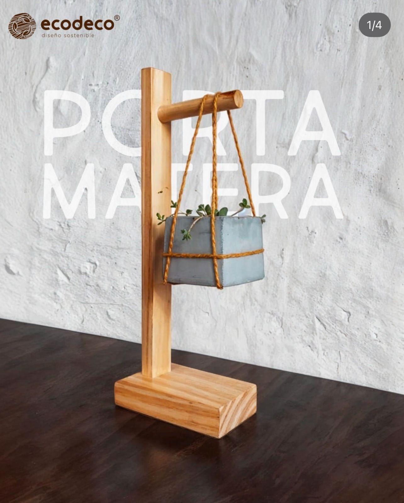

Análisis de una experiencia de pasantía en EcoDeco Diseño Sostenible
Una pasantía en un taller de Cali que fabrica mobiliario a medida con madera recuperada de estibas. Qué aporta un diseñador industrial en una pequeña empresa, y qué revela esa experiencia sobre las condiciones en que se forman los pasantes.

Pasa el cursor o toca cada etapa del ciclo para conocerla.
Toca una carta para abrirla a pantalla completa, o una foto para ver el proceso de ese proyecto. Puedes seguir la exposición desde tu teléfono con la barra de abajo.